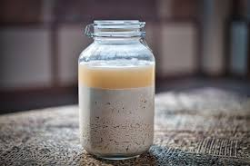

Ersho

Ersho: Injera Starter
According to Maskal Teff, "The injera fermentation process is very similar to that of sourdough and requires a starter (ersho) to be created approximately three days before mixing the batter.
Ingredients
- 1 cup (188g) Maskal Teff flour
- 2 cups (473g) lukewarm or room-temperature water
How to Make Ersho
- Combine 1 cup of Teff flour with 2 cups of room temperature water in a container. (See Tips & Tricks for increasing or decreasing quantity of starter).
- Whisk until there are no clumps of flour and ingredients are thoroughly combined. You should see a thin foam film develop on the top.
- Seal the container store in a dark, dry room at around 70 degrees Fahrenheit. The warmer the room, the faster your starter will ferment.
- Observe fermentation throughout the next three days, but do not touch or disturb the container.
Approximately Three Days Later, Use the Ersho to Create a Dough!
- Open the container, you should see a foam film on the top as well as a layer of murky water above the settled flour. Discard the murky water layer and stir the starter making sure it is thoroughly combined.
- In a large sealable container (we suggest clear for the first time), mix the starter with the flour. You can also mix in a large bowl and then transfer to a sealable container.
- Gradually pour 3-4 cups of water, one cup at a time, while mixing either by hand or with a mixer. You may not need the full 4 cups as you want the dough to be a thick consistency.
- Knead the dough for about 3-5 minutes, until it is very thick but smooth. The dough should peel off the bowl sides easily.
- Press the doughy batter into the bottom of the container.
- Use the remaining 3-4 cups of water to clean off the container’s sides. Be sure not to mix the water with the dough, as the layer of water (aka “top water”) is just meant to keep mold from growing on the surface of the pressed dough. There should be a thick layer of the dough and a layer of murky water above when done.
- Put a tight lid on the container and store in a dry place at room temperature for 1-3 days based on desired sourness (one day being less sour and three days being very acidic). You may also discard the top water and place new water of the same amount daily to reduce sourness as well.